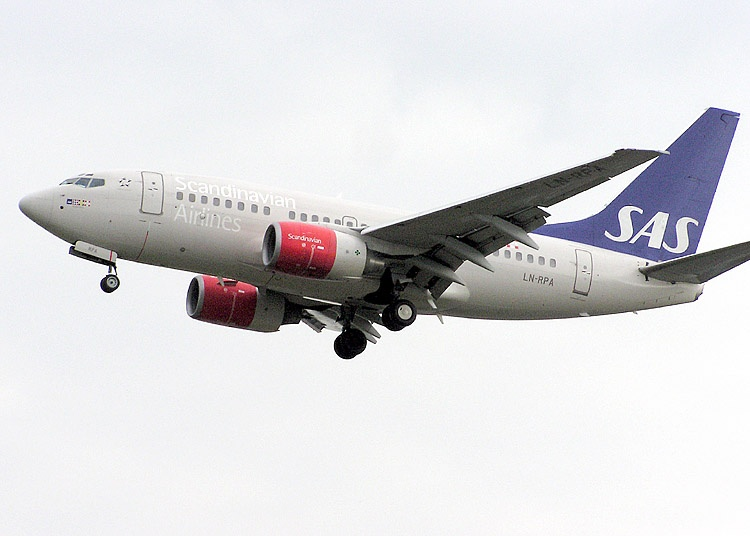
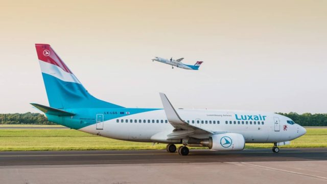
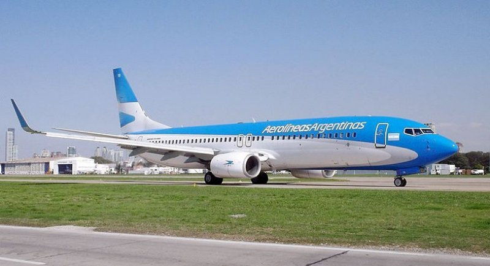

El 22 de enero de 1998, la versión -600 del Boeing 737 fue nombrada de igual forma como B737-500X, con un fuselaje de longitud similar a la del -500; podía transportar entre 108 y 132 pasajeros. El -600 fue el tercer modelo de las nuevas generaciones en ser construido.

Boeing 737-700
La versión -700, fue la primera aeronave de las nuevas generaciones en volar, realizando su primer vuelo el 9 de febrero de 1997, en sustitución del B737-300 y compitiendo directamente con el A319 de Airbus.
Fueron construidas versiones de carga y ejecutivas, así como versiones de largo alcance como el B737-700ER, el cual ofrecía un rango de 5,500nm (10,100km), convirtiéndolo en el avión de la familia 737 con mayor rango de todos

Boeing 737-800
La variante más exitosa de todo el programa 737, es la versión -800, con más de 5,500 pedidos y más de 4,500 aviones entregados.
El primer vuelo de esta versión se llevó a cabo el 31 de julio de 1997, en sustitución del B737-400X. Esta variante ofrece una longitud de fuselaje mucho mayor al -400 con 39.4 metros adicionales y una capacidad para transportar a 189 pasajeros en una sola clase o 162 en dos. La versión -800, ha incluido puntas de ala sofisticadas, llamadas Winglets, las cuales ofrecen un ahorro de combustible de hasta un 7%, gracias a que su forma que reduce la resistencia aerodinámica.

Boeing 737-900
Boeing comenzó a trabajar en la versión más grande del 737, el -900, el cual competiría en el mercado con el Airbus A321 al poseer una capacidad para llevar entre185 y 220 pasajeros. El -900 cuenta con un espacio en cabina 9% más amplio y un 18% más de espacio en los compartimientos de carga, en comparación con el -800.